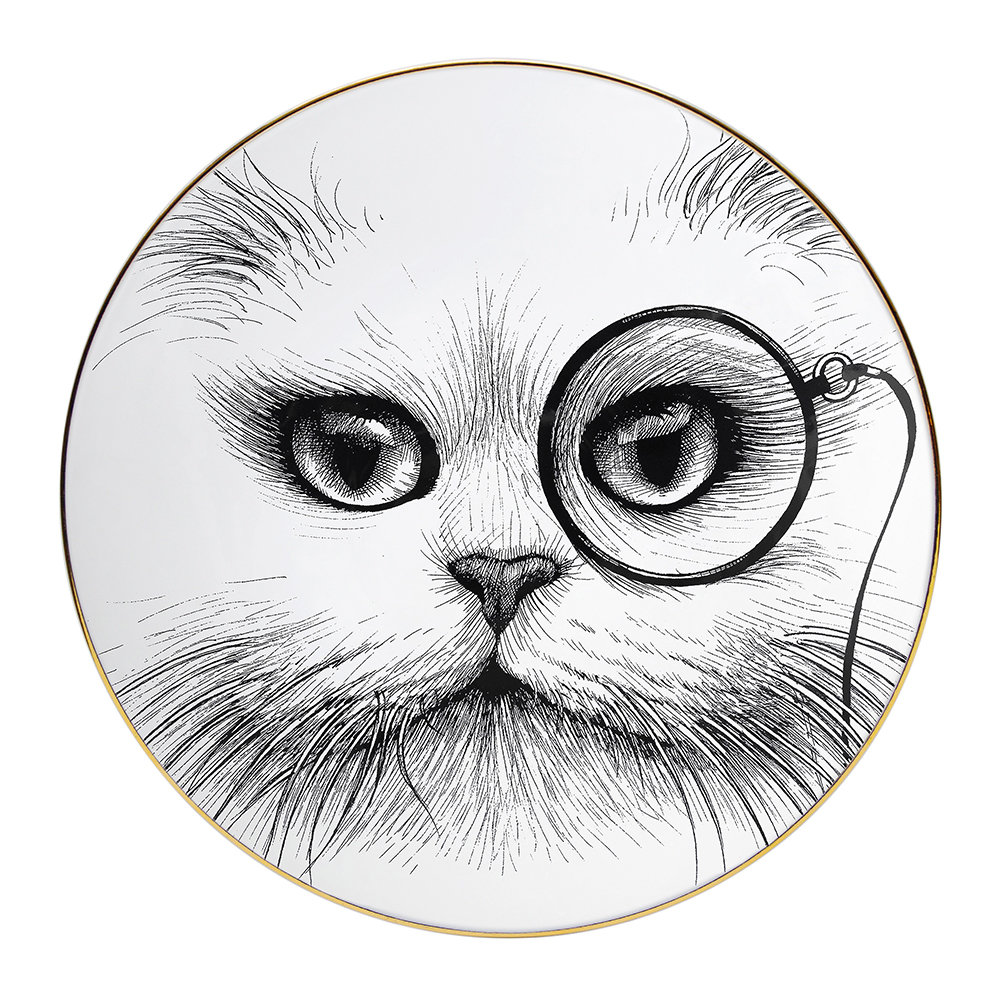

A collection of my greatest achievements.
Chew on cable. Relentlessly pursues moth. Jumps off balcony. Gives owner dead mouse as present. Snatches yarn and fights with dog. Cat chases laser then plays in grass. Finds tiny spot in cupboard and sleeps all day. Jumps in bathtub and meows when owner fills food dish. The cat knocks over the food dish. Cat slides down the water slide and into pool and swims even though it does not like water.
I like big cats and I cannot lie.
Rub against owner because nose is wet. Going to catch the red dot today going to catch the red dot today. Meow all night disturbing sleeping humans. Catty ipsum. Hack. Find a way to fit in tiny box. Annoy the old grumpy cat, start a fight and then retreat to wash when I lose. While happily ignoring when being called.
Hide when guests come over. Instead of drinking water from the cat bowl, make sure to steal water from the toilet. Eat too much then proceed to regurgitate all over living room carpet while humans eat dinner. Catasstrophe. Eat the rubberband. Nyan. Fluffness. Ahh cucumber!